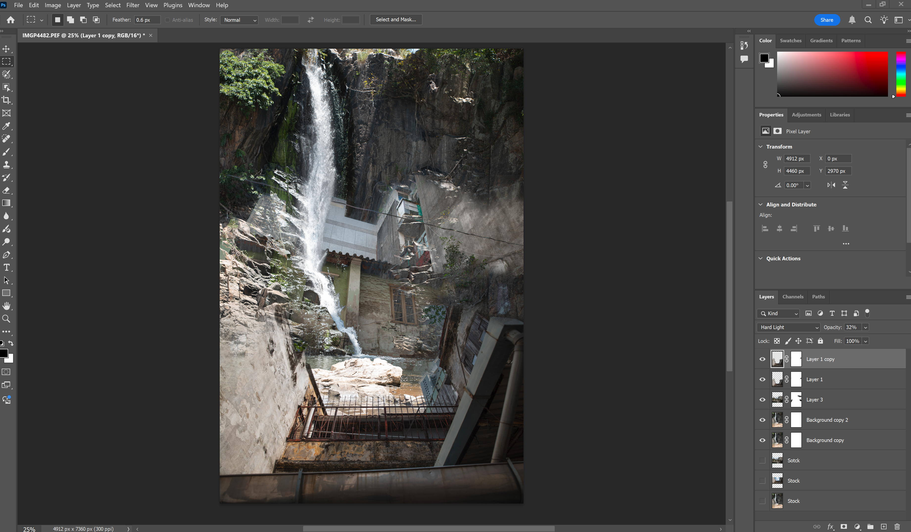
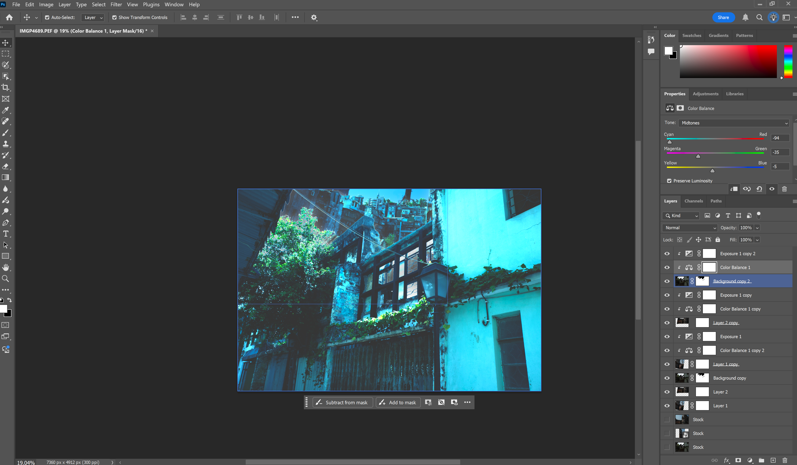

Screenshot:
In this image I used photographs I took years ago from a trip to Hong Kong and Macau. I mixed the water fall and apartment building in same image after adjecting their exposure. I am able to do this since they were taken in RAW format. I duplicate the original input image into stock layers as a back up. I adjected the images with exposure and contrast to match their tone together. I then use layer mask with eraser tool to remove the hard edges. Additional duplications were make and changed blending with hard light, lighter color and overlay.
Screenshot:
In this image I used photographs I took years ago from a trip to Hong Kong and Macau. I mixed the abandoned building and apartment buildings in same image after adjecting their exposure to create an oppressive image. I am able to do this since they were taken in RAW format. I duplicate the original input image into stock layers as a back up. I adjected the images with exposure and contrast to match their tone together. I then use layer mask and adjustment layer including color balance and exposure to recreate the low effect photoshop promotional poster akin to 90s from Hong Kong.